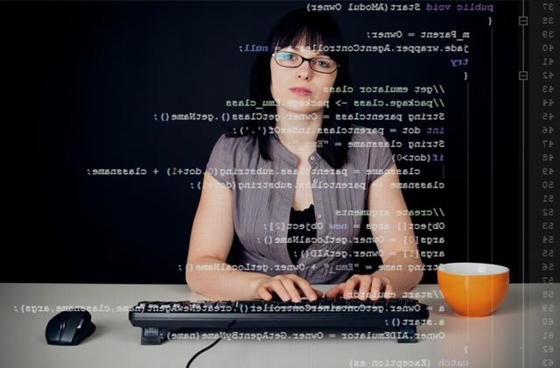

Kiss József
Bemutatkozás:
Kiss József, 28 éves diplomata vagyok. Pár éve végeztem az egyetemen szoftverfejlesztő mérnök szakon. Az egyetem alatt kimagasló eredményeket értem el, majd 26 éves koromban megalapítottam Huszár Máriával a PhoneTown céget.
Huszár Mária
Bemutatkozás:
Huszár Mária vagyok, 27 éves diplomata. Nem rég fejeztem be az egyetem, nagyjából egy éve és az egyetemi évek alatt megismertem Kiss Józsefet, aki mostmár nem csak a barátom, hanem a kollegám, hisz együtt alapítottuk meg a PhoneTown céget. Ez volt az álmunk, hogy telefonokra fejlesszünk és most ezt is csináljuk.